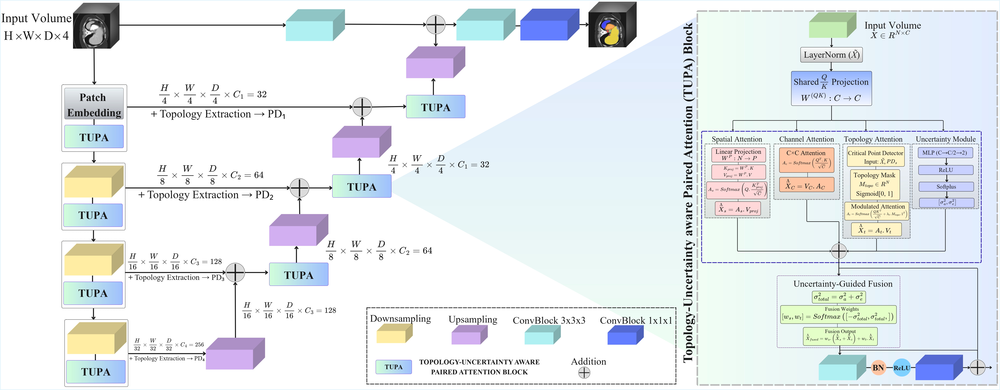
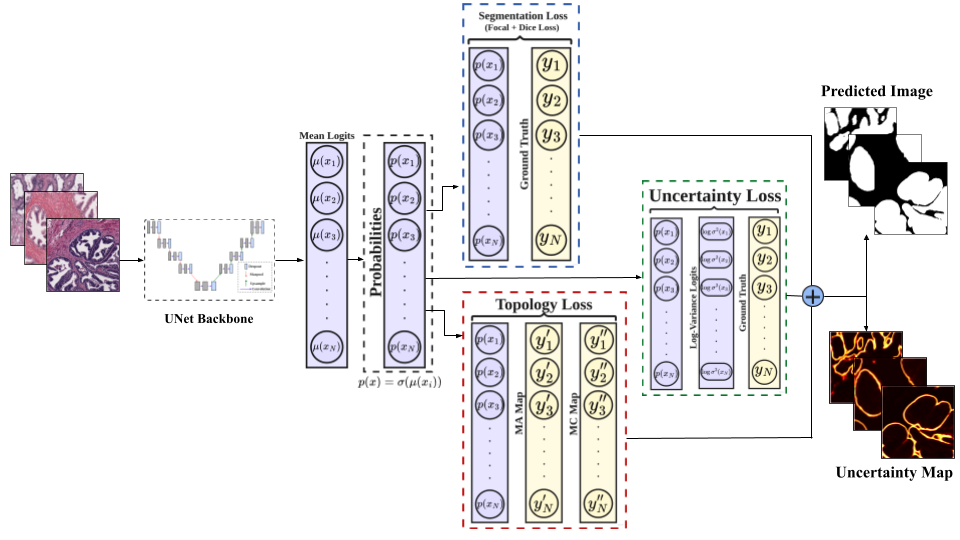
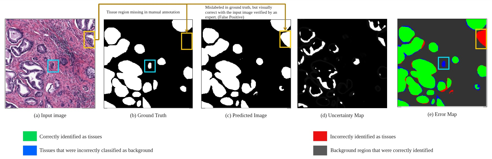
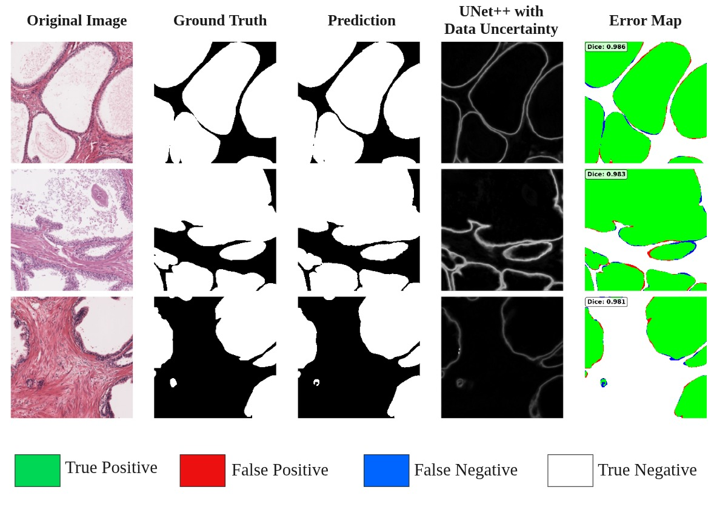
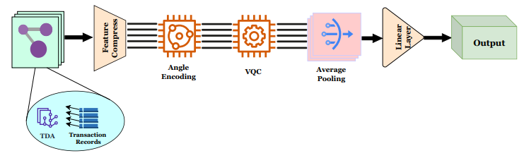
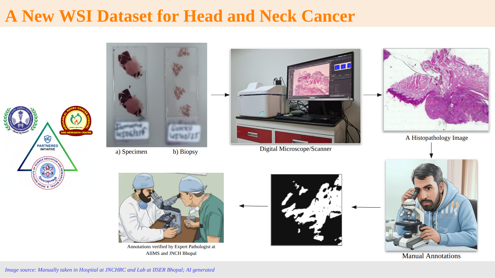
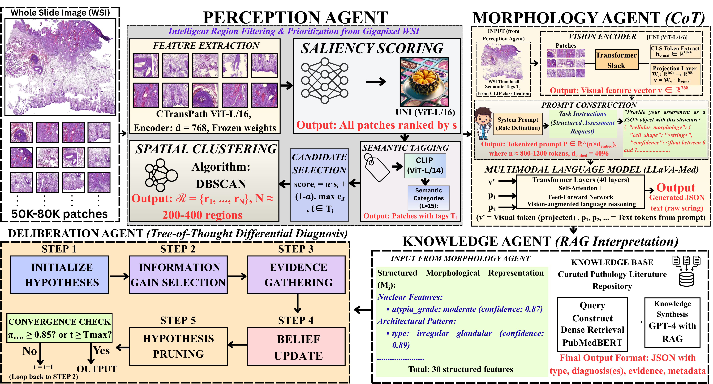
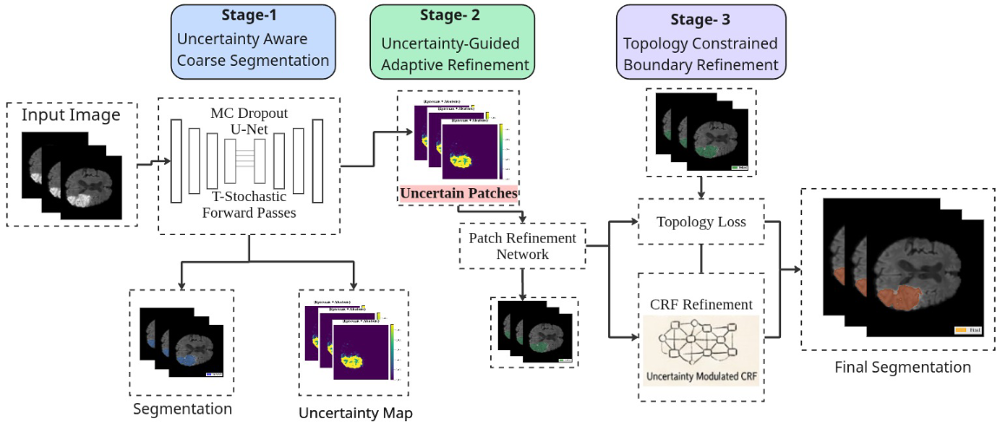

Ashim Dhor
BS-MS Student in Data Science & Engineering, IISER Bhopal
ashimdhor2003@gmail.com
I am Ashim, a final-year BS-MS student in the Data Science and Engineering Department at Indian Institute of Science Education and Research - Bhopal (IISER-B). I am currently working on my Master's thesis in Data Science and Engineering under the supervision of Dr. Tanmay Basu, in collaboration with clinicians at Jawaharlal Nehru Cancer Hospital and Research Centre, Bhopal, and AIIMS Bhopal.
My research spans computer vision and deep learning, with applications in biomedical image analysis across modalities including CT, MRI, and whole-slide histopathology images (WSIs). I am particularly interested in uncertainty quantification, topology-aware learning, and building AI systems that are not just accurate but also reliable and interpretable. More recently, I have been exploring Vision-Language Models (VLMs), Multimodal Large Language Models (MLLMs), multi-agent reasoning, and LLM-driven pipelines for clinical decision support — with the broader goal of making these systems trustworthy enough for real-world deployment in healthcare.
Outside of research, I love playing kabaddi and am always on the lookout for good food. Feel free to drop me a mail: ashimdhor2003@gmail.com!
news
- 2026 Our paper TUNE++ on topology-guided uncertainty for 3D medical segmentation is accepted at MIDL 2026.
- 2026 Paper on HISTO-UNet for histopathology segmentation accepted at IEEE ISBI 2026.
- 2026 Awarded the MICCAI Society Membership Grant 2026.
- 2026 Topo-GraT accepted at AAAI 2026 (Student Abstract Track). Received Student Scholarship Travel Grant.
- 2025 Selected as a Reviewer for CHIL 2025, ML4H 2025, and AAAI 2026.
- 2025 Started as Bioinformatics Scientist Intern at Elucidata.
- 2025 Selected for NBEC 2025 second round for HistoAI, an AI-powered cancer diagnostic tool concept.
- 2024 Paper on Financial Fraud Detection using Quantum GNNs published in Quantum Machine Intelligence.
publications
2026




2024

work in progress



